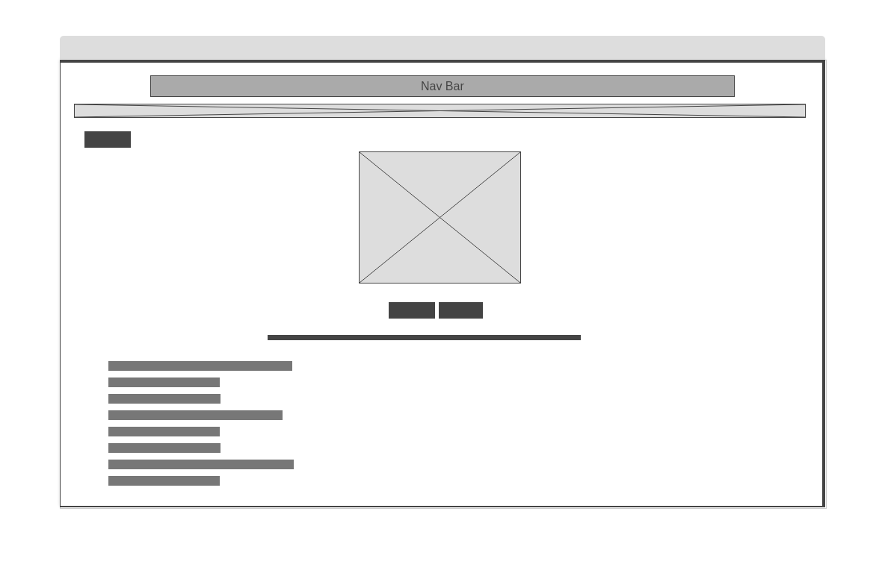
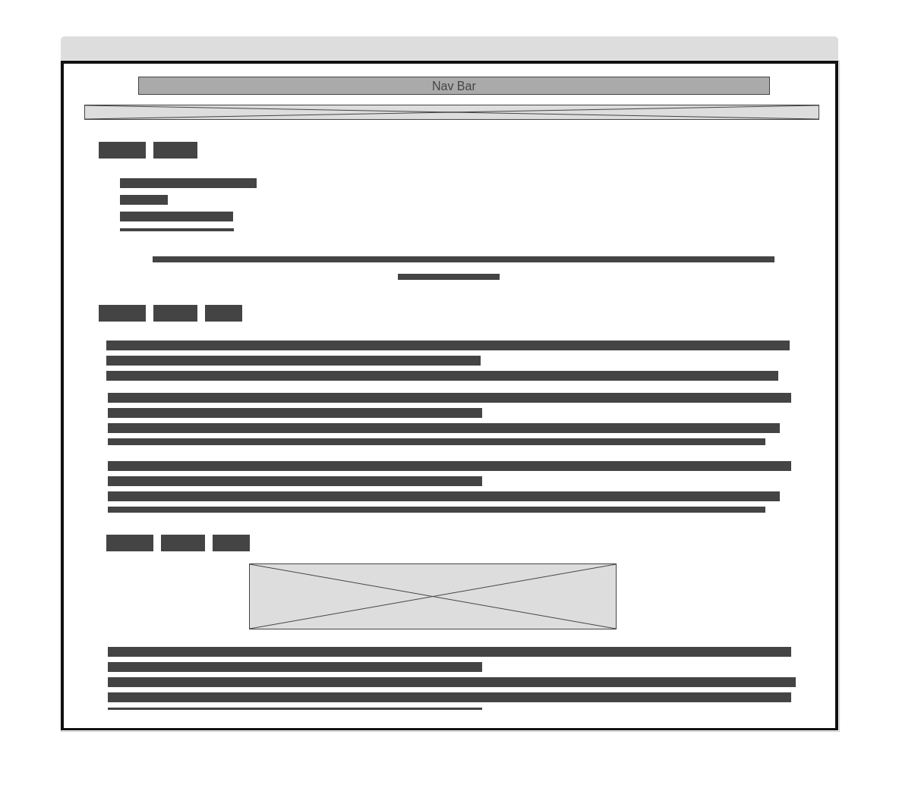
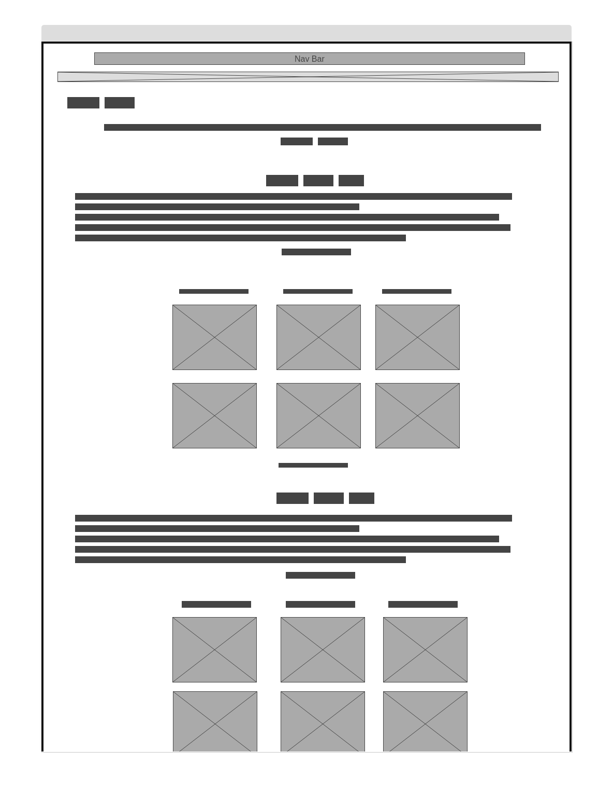
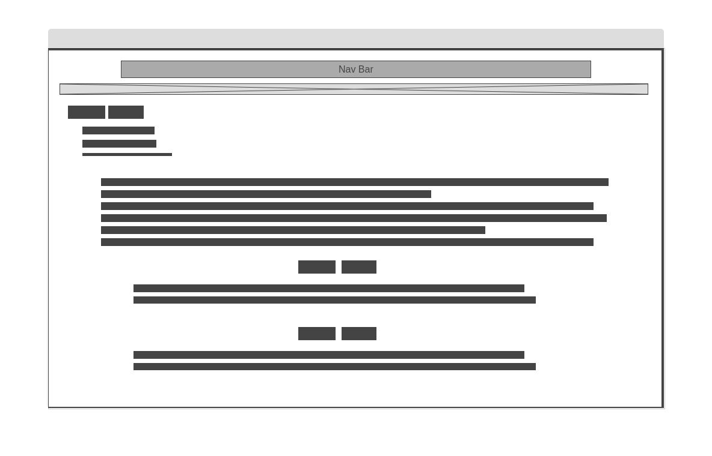
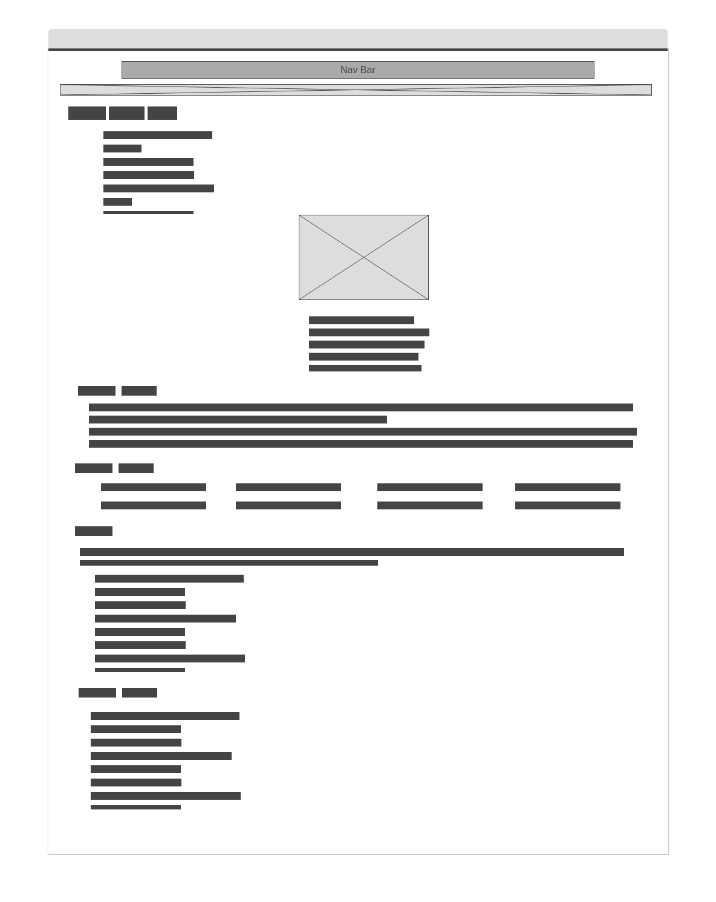
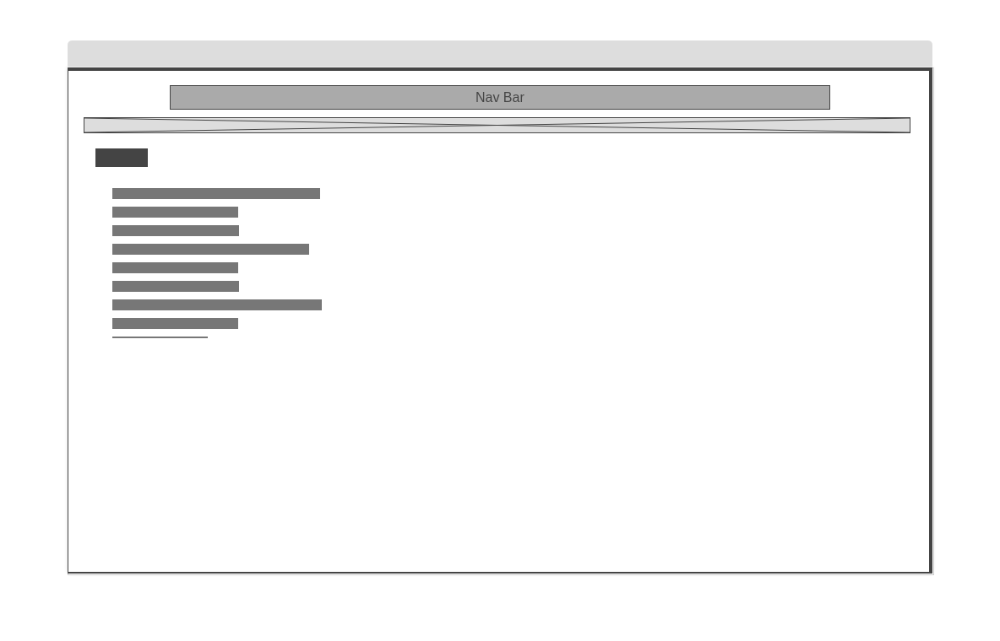
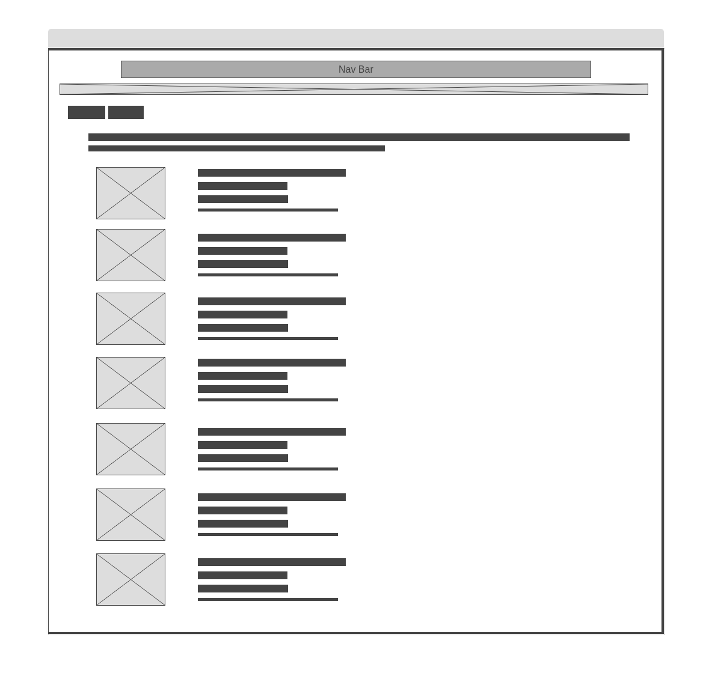

The Website Storyboarding page contains drawn layout designs of pages, as well as their descriptions, information about the sites aesthetics and theme and the websites hosted link.
Hosting: The website is hosted using github pages and can be accessed using the link: https://lexciib.github.io/
Aesthetics and Theme: The inspiration for the colour palette of the website was a drawing I had done all must a year ago that I wanted to feature on the front page. The drawing consisted mostly of earth tones which gave it a warm and cosy atmosphere and I aimed to replicate that in the website I created. For that reason I choose a mostly earth-toned pastel colour palette, featuring heavily in green and browns.
|  |
Home - Front/Splash PageMy intention with this webpage was to offer users a homepage where the can get acquainted with the website and see what the other webpages would offer. A cool feature I added to the page was a clickable image, that when clicked on linked to my instagram page. |
|  |
Who am I - Personal Page/Personal Development PageMy intentions with this page where visitors could learn about who I was as a person, which I did through a story. I thought a story would serve as more engaging to describe myself, as compared to just lsiting of personality traits. The story also offer me a way to show some personal Development. Features I added to this page was internal links that would carry the user to different parts of the website as well as external link to the Keirsey Website embedded in text. |
|  |
What do I do - Personal Page Part 2This page serve to show visitors more of my personality, but it a more light hearted way. And is my favourite page on the website. On this page I spoke about two of my biggest interest, drawing and game. Giving a brief summary of my relation with each and exhibit some of my favourite artist and games. Features I added to the page were internal to each topic, external links to my instagram and steam, and a table to display the name and work from my favourite artist and a table to display my favourite games and their genre. |
|  |
Vision and Mission - Professional Part 1Like the personal page, I also break the professional page into two parts. On this page I breakdown my vision and my mission, and thoughts on the topic a prefessional vision or mission. A feature I added to this page were internal links that brought visitors to my vision and my mission statement. |
|  |
Career and Academics - Professional Page Part 2On this page I give visitors more information as to who I am in my professional and academic careers. This page is done in a format similiar to a CV and Resume, listing of my skills, experiences and achievements. The star feature of this webpage is the clickable image at the top of the page that opens an email client preload with my email. Other features I were internal linked that brought visitors to different sections of the website, and external to my linkedIn and unorder list to display content. |
|  |
References - Reference PageThis page dispays a list of resources I used to create the website in the APA format, displayed through an ordered list. |
|  |
Website Storyboard - Storyboard PageThis page contains my thoughts and ideas for the website, it's overall theme and the layout of each webpage and detailed descriptions, as well as the link to where the website can be found hosted online. Feature using on this page are an external link to the hosted website embedded in text and a table to display the webpage layout and descriptions side by side. |